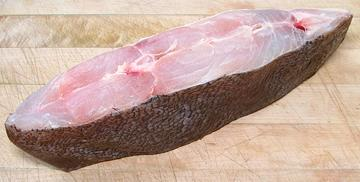

Pacific Halibut are large righteye flounders growing to almost 9 feet and 500 pounds. They are found from northern Baja California, Mexico all they way around to the northern tip of Japan. They are a prized eating fish and well known, so other flounder are sometimes labeled "Halibut" in markets. I have seen Dover Sole labeled as "Baby Halibut" but it is dark on both sides while Pacific Halibut is white on the blind side.
This fish can be told from the smaller California Halibut from the dorsal and anal fins being more pointy in the center, giving the body a diamond shape. Pacific Halibut is not considered endangered, IUCN Red List status NE (Not Evaluated), but the larger (to 710 pounds) Atlantic Halibut is IUCN Red List rated "EN" (endangered) and should not be fished or eaten. Photo of Pacific Halibut by Jlikes2fish contributed to the public domain.
More on Flounder Families.
 Pacific Halibut tends to be a rather large fish, so is most often available as cross sectional steaks or part fillets. The photo specimen was from a fish about 11 inches wide, not counting the fins. The steak was from near the head end and cut at a fairly sharp diagonal to avoid the body cavity at the bottom but get maximum meat from behind the head at the top. The steak was 2-1/4 inches in cross section and 3-1/2 inches along the length of the fish. This fish was probably around 36 inches long, weighing somewhere around 25 pounds. Be aware that if one side of a steak isn't white and the other dark, it's not Halibut.
Pacific Halibut flesh is white, very mild, delicate in flavor and texture, and flakes apart easily on the plate. It is an ideal fish for those who like their fish "white and lite", and for fancy chefs who don't want fish flavors interfering with their delicate sauces. For these reasons it is considered a premium eating fish that fetches a high price. For these very same reasons, I consider it very much overpriced - I prefer my fish to taste like fish and have better texture.
Cooking: This fish works best with dry cooking methods such as frying, grilling or baking. Pieces of fillets can be poached if they aren't too large and the poaching time is very short (4 minutes), but it will be rather bland. You definitely don't want to try to use this fish for soups or stews - it will just fall apart into individual muscle fibers. My favorite way to eat this fish is lightly powdered with rice flour and pan fried, skin-on, eaten with my simple Lemon Wine Sauce.
Buying: The photo specimen was purchased from a
very large Asian market in Los Angeles (San Gabriel) for 2017 US $7.99
/ pound. This is pretty economical, since the yield is quite high, 83%
vs. less than 50% for most whole fish. It probably costs a lot more
from other sources.
Skin: The skin has very little shrink - so little you can poach a skin-on piece and the skin will not distort it. It quickly softens and almost disappears. Raw, it is thin but strong, so can be removed with the usual long knife and cutting board Method.
Cleaning, Filleting, etc: If you have acquired a smaller fish whole, use the instructions for California Halibut, as they are nearly identical.
Subst: If size isn't a factor in a recipe there are substitutes that have similar cooking properties. If you live on the West Coast of the US, California Halibut is the obvious choice, as it's fairly large, closely related and almost identical in properties. Petrale Sole can also be used, but is quite a bit smaller. If you live on the US East Coast Fluke (Summer Flounder or Southern Flounder) should work, or in Western Europe you can use Sole.
sf_pachalz 171108 - www.clovegarden.com